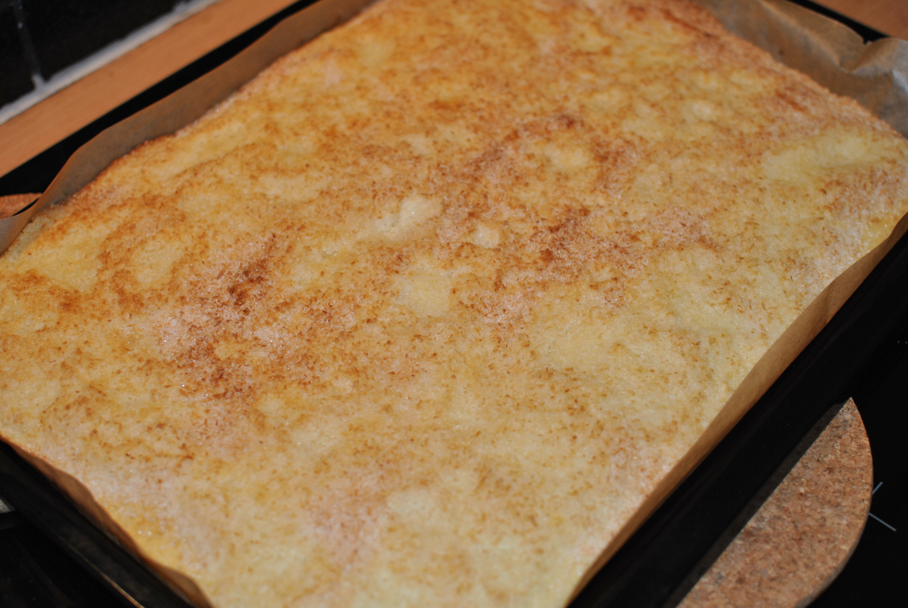

Buttermilchkuchen

|
Allgemeines
|
Zutaten
-
450 g Mehl
-
1 Päckchen Backpulver
-
3 Eier
-
375 g Zucker
-
1 Päckchen Vanillezucker
-
400 g Buttermilch
-
100 g Kokosflocken
-
30 g Butter
-
150 g Sahne
-
Fett fürs Blech
Zubereitung
-
Das Backblech fetten. Den Backofen auf 200° Celsius vorheizen. Mehl mit Backpulver mischen. Eier, 300 g Zucker und Vanillezucker schaumig schlagen. Buttermilch und Mehl unterrühren. Den Teig auf das Backblech streichen.
-
Die Kokosflocken mit 75 g Zucker mischen und über den Teig streuen. Im Ofen (mittlere Schiene) 15 Minuten backen.
-
Die Butter mit der Sahne erhitzen, bis die Butter geschmolzen ist. Mit einem Löffel auf der Oberfläche des Kuchens verteilen. Den Kuchen in 10 Minuten fertig backen.